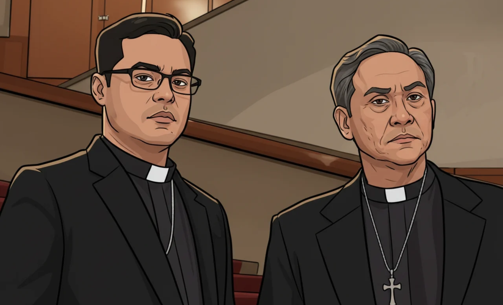

Once Upon a Page
Once Upon a Page

A Body Is Found

Father Gus Saenz performs an autopsy on the boy. Saenz is tall, wiry, and good-looking with thick, wavy hair that is greying at the temples. His friend and protégé, Father Lucero, calls it “rock star hair.” In addition to his ministerial duties, Saenz teaches university classes and is a forensic anthropologist. Father Jerome is a clinical psychologist. In contrast to the older Saenz, he is compact and solidly built, with an intensity that makes him seem older than thirty-seven. The two discuss the murder. Saenz observes that the boy’s face was flayed by a small, sharp, smooth blade. They note that since there is was no blood at the site, the killing must have taken place elsewhere. While the boy had not been sexually assaulted, Jerome believes that the killer must have “some sexual conflict in there somewhere,” because of the removal of the boy’s genitals. The priests discover that the boys were each killed on the first Saturday of the month over the last six months.
The acting director of the National Bureau of Investigation, elderly Director Lastimosa, cares about the deaths. He calls on Saenz to join his investigation, agreeing that there is a serial killer on the loose. He states that there are no witnesses and the local police have stopped investigating. Lastimosa comments, “Life is cheap in that part of the city.” Saenz joins the team, led by the ambitious, self-serving attorney, Ben Arcinas. Saenz and Jerome face many challenges in their hunt to find the killer. There are few accurate crime statistics or records available. Law enforcement agencies are often incompetent or corrupt, and reports are often made selectively or whitewashed. An investigative reporter, Joanna Bonifacio, helps Saenz get information from government officials.
Saenz is also intent on bringing another criminal to justice. He is aware that the Church is ignoring the actions of a pedophile in their ranks. Saenz knows that Father Ramirez is guilty of molesting children under his charge, including one of Saenz’s former pupils. But Ramirez has made powerful friends and the children will not testify against him. The cardinal moves Ramirez around to new positions but will not discipline him.
As Saenz and Jerome search for clues to the killer’s identity, they discover that a mobile dental clinic services the Payatas community on Saturdays. They request the dental records of the boys to help identify them. The priests’ search is juxtaposed with memories from several of the boys’ mothers, who describe the lives of their children and the challenges they had raising them in such hard conditions.
The dentist, Dr. Alex Carlos, provides the records to the investigation. Saenz and Jerome realize that the knife marks on the victims’ skulls could easily be made by dental instruments and identify Carlos as a suspect. Jerome talks to Carlos’s parents who reveal that Alex was raped by his school PE teacher, Mr. Gorospe. They allowed it to go on so Alex could stay in school. They insist “nobody talked about such things back then.”
Saenz and Jerome theorize that Carlos plans to destroy himself by placing himself in a position to get caught or killed. The team goes to Carlos’s apartment where they find organs stored in his freezer. Carlos kills another boy, but rushes and does not complete the mutilations. Saenz and Jerome track Carlos to the dental clinic. Saenz enters and attempts to talk Carlos out. He tells Carlos that although he’s become a little like Mr. Gorospe, he can heal himself, regain what the man took from him, and atone for what he took from others. Carlos follows Saenz out of the clinic. An over-eager policeman shoots, wounding Carlos, who attacks Saenz, slashing him with a blade. More shots are fired, killing Carlos who manages to say “I. Didn’t. Want. It.”
Saenz recovers in the hospital. Lastimosa reveals that Father Ramirez has been stealing from charity funds, giving Saenz legal evidence to get him removed. Saenz and Jerome visit Carlos’s grave. Jerome feels compassion for Carlos but acknowledges that not everyone can be saved.